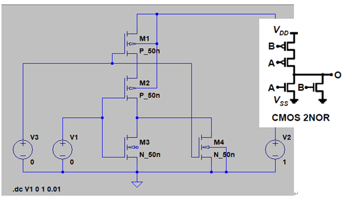
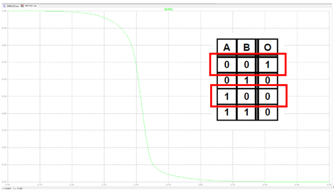
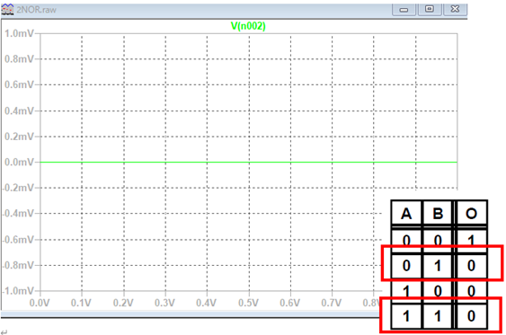
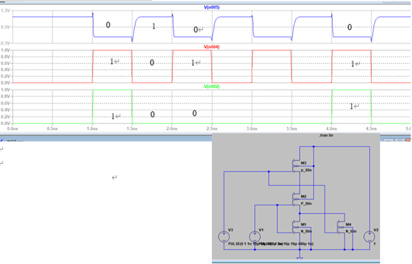

2NOR 回路の作成
回路図作成の参考
2NOR 回路もテキストに基づいて作成できますが、講義3の14ページを参考にすると理解が深まります。2NOR 回路の設計に際しては、前の回路と同様に PMOSとNMOS の組み合わせで構成されます。
トランジスタの設定
2NOR 回路に使用するトランジスタの設定は以下の通りです。
- Model Name: P_50n (PMOS), N_50n (NMOS)
- Length: 50nm (PMOS、NMOS 共通)
- Width: 500nm (PMOS、NMOS 共通)
回路の保存
2NOR 回路も、回路図が完成した時点で必ず「ドキュメント > LTspice 実習フォルダ」に「2NOR」という名前で保存してください。
シミュレーションの実行
A入力を0Vから 1V にスイープし、B入力を固定して、2NOR の動作を確認します。シミュレーション結果では、AとBのどちらかが 0V の場合に出力が1になることが確認できます。両方が 1V の場合、出力は0V になります。
•V3（B入力）を1V固定し、V1（A入力）を0～1Vまでスイープした結果
シミュレーション結果として、真理値表の赤枠で囲んだ通り、Aが0のとき0、Aが1のとき0となっていることが確認できます。
パルス入力による考察
余談ですが、V1 と V3 にパルス入力を入れることで、一度に多くの結果を確認することができます。パルス入力は後ほど詳しく説明しますが、シミュレーション結果を考察する際の一つの方法として覚えておくと良いでしょう。
下のグラフでは、一番上の波形が出力を示し、赤が V1(A 入力)、緑が V3(B入力)です。
